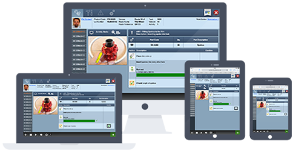

Our mission is to provide visual tools for effective management of lean operations
Does your company struggle to maintain paper based work instructions? Maybe you're heavily reliant on tribal knowledge or just looking to implement a lean philosophy? Whatever your problem we are confident that VisualFactory will be the solution.
an extensive lean software application
VisualFactory is a web browser based software application (running inside your corporate firewall) that is proven to dramatically reduce costs, improve the productivity and efficiency of your workforce, and deliver Right First Time quality.
stable & standardized processes
VisualFactory provides real time, dynamic Electronic Work Instructions (EWI) so that products are built right first time every time, even in low volume high variety and configure to order environments.
more than just visual work instructions
VisualFactory has been engineered to record and track extremely valuable, required manufacturing data. This ranges from recording what tools are used, to how long a particular activity took to complete.
Footage of VisualFactory in use at Esterline Racal Acoustics.
We believe in a simple three step process, combined with a Kaizen mentality
VisualFactory helps you optimize your manufacturing processes inline with lean manufacturing methodologies and get Right First Time quality.
Simplify
VisualFactory's built in intelligence and innovative configurator make producing high variety, complex assemblies extremely simple and cost effective.
Standardize
VisualFactory is a single point of contact for all manufacturing knowledge & intelligence, eliminating the need for multiple document based systems.
Automate
VisualFactory automates and coordinates the manufacturing intelligence needed to optimize operations. This provides the information you need to know, when you need to know it.
VisualFactory seamlessly integrates with your existing business applications
VisualFactory enables best practice Lean Manufacturing with standardized visual work instructions.
VisualFactory sits in levels 2 & 3 in the manufacturing systems model, coordianting mission critical tasks.
VisualFactory eliminates fragmented/disconnected software systems with a range of integrated modules.
These modules provide Manufacturing Execution System (MES) & Manufacturing Operations Management (MOM) functionality.
VisualFactory becomes a single source for Manufacturing Knowledge & Manufacturing Intelligence.
Implements core manufacturing philosophies; Lean Operations, Just In Time Production, Kaizen, Visual Kanban and more.
We provide a comprehensive platform for supporting lean manufacturing, integrating with other business systems to provide a co-ordinated system in line with an ISA-95 approach.
Business Applications
enterprise / business operation systems
erp, apo, aps, crm
plm, plant / process design
eh&s, cmms, bpm
bi, dw, scm, eqms
level 4
VisualFactory
visualfactory integrated suite of modules
vRECORD
vINSTRUCT
vANDON
vBOM
vKANBAN
vSKILLS
levels 2 & 3
Automation Applications
industrial automation systems
plc / pac
safety
motion
dcs
levels 0 & 1
A modern, mobile orientated application

a cutting edge application for lean manufacturers
VisualFactory is completely web based & deployed within your own secure intranet. This provides access to all authorized users from PC, Mac, iPad or Android tablets with no software to install. This ensures you have complete control over your data while also retaining the maximum portability of a web based, mobile orientated application.
a device agnostic, cross browser compatible platform
VisualFactory is designed with past, present & future technology in mind. Not only will VisualFactory run on all modern systems & web browsers but we also strive to support legacy systems & software. We acknowledge & understand our current and potential customers may require the use of older Windows Operating Systems. To aid these customers we fully support Internet Explorer down to version 8.
A feature packed application ready & waiting
VisualFactory has a multitude of features, below we show just a few of the most sought after.
web based
VisualFactory is a web application that runs on an internal, intranet network. This removes the need to install & maintain hundreds of copies of the software.
bom integration
VisualFactory is designed to integrate with many existing ERP & MRP systems. These include SAP, Oracle, WinMan, Mapics as well as others.
visual work instructions
VisualFactory allows for the creation of Visual Work Instructions. These are designed to be more intuitive and usable than traditional text based instructions.
database driven
VisualFactory is a database driven application which facilitates content reuse and powerful authoring capabilities. This allows for single point editing of visual work instructions.
modular design
VisualFactory is built using a modular design approach. This gives customers the ability to easily add modules & functionality only when they require them.
record production data
VisualFactory has the ability to record extremely valuable data regarding a production process. This includes; the tools and parts used as well as completion times for specific tasks.
version control
VisualFactory has the ability to easily control multiple versions of Visual Work Instructions, ensuring the most up to date versions are used.
extensive help & support
VisualFactory offers 24 hour phone & online support as well as on site support where necessary.
mobile compatibility
VisualFactory is compatible with mobile & tablet devices, making portable Visual Work Instruction solutions viable reality.
Achieve your ROI as quickly as possible
The team behind VisualFactory are committed to helping customers obtain their ROI as quickly as possible. If you require an urgent solution VisualFactory can be implemented in 6 weeks or less through the use of our rapid deployment process.
Case Studies
Below are a selection of impressive case studies where VisualFactory has been instrumental to a companies success.
Racal User Case Study
Racal Acoustics is a manufacturer of specialist acoustic ancillary equipment, mainly for the military and emergency services markets. This case study goes into detail about how VisualFactory has aided the growth of the business.
This particular case study aims to explore in more detail how VisualFactory has allowed Manufacturing Engineers at a Racal Acoustics Facility to increase their productivity by up to 15% and reduce line switches to below 20 minutes.
Terex is a world leader in the manufacture of heavy duty equipment for use across a multitude of industries. This case study explores how the continious intergration of VisualFactory modules is helping the company strengthen its global market share.
In this case study Paul Cole, the lead manufacturing engineer at Kelvin Hughes goes into detail about how the introduction of VisualFactory has cut costs by more than 50%.
This particular case study describes how VisualFactory has allowed SAAB SeaEye to achieve ROI within 2 years of purchasing the software and how rework costs have been reduced by a huge 75%.
Learn more about the team building the worlds most advanced lean manufacturing system.
VisualFactory is designed, built and maintained by a team of lean manufacturing experts at NoMuda who have 25 years of manufacturing experience. The VisualFactory system has over a decade of use in some of the world/'s largest and best manufacturers. Sign up to our newsletter to learn about how our customers implement and sustain their lean operations, giving them competitive advantage.
What our customers think
Don't just take our word for it, read what some of our customer have to say about their experiences with VisualFactory below.
VisualFactory has been a major success. The team at NoMuda, working with our own staff ensured that the project ran precisely to the agreed plan & that we began to feel the benefits exactly as promised.
VisualFactory has a dramatic effect on labour flexibility, enabling the moving of staff between workstations & allowing them to be effective in a new area immediately.
VisualFactory greatly reduces excessive time & costs in the process of creating, updating, controlling & delivering work instructions as well as other documentation to the shop floor.
Bombardier Transportation
Volvo Construction Equipment
Esterline Racal Acoustics
Blog
Isn't it time you reaped the rewards?
Case Study
VisualFactory at Hypertherm
Simplify - Standardize - Automate
Visualise a simpler way to lean manufacturing
Simplify, Standardize, Automate
Showcasing VisualFactory
Thanks to all those who came to see us at the Southern Manufacturing & Electronics Exhibition.
Visualise a simpler way to lean manufacturing
VisualFactory has a proven track record...
Contact Us
Interested in VisualFactory? Would you like an online demonstration?
You can use the below phone numbers to contact us directly, alternatively use the contact form & we'll aim to reply within 24 hours.
US PHONE:
919-321-1374
UK PHONE:
0121-270-6432
Isn't it time you reaped the rewards?
Case Study Esterline Racal Acoustics. Visualise a simpler way to lean manufacturing with the world/'s most advanced visual work instruction software.
CASE STUDY: ESTERLINE RACAL ACOUSTICS FACILITY
Visualise a simpler way to lean manufacturing with the most advanced visual work instruction software in the world.
Isn’t it time you reaped the rewards?
“VisualFactory is easy to use, and most importantly, is backed by a very experienced team of engineers and geared for use in real production situations. It is perhaps the most important Lean tool you can have.””
Racal Acoustics products are world-leading, high quality, state-of-the-art military audio and data systems and components designed to operate in the most severe battle environments. From secure audio and data intercommunication/networking systems to rugged noise-cancelling handsets and headsets, the Racal Acoustics operation, acquired by specialty manufacturer Esterline Corporation in 2008, is on the frontline of battlefield communication.
Esterline’s Racal Acoustics team turned to VisualFactory in 2005, as Senior Production Engineer David Poulten explains:
“We were a very busy Production Engineering department, struggling to keep up with the shop floor queries and change notes that were our daily life. We were fire-fighting a never-ending stream of problems, and any chance of ever doing ‘proper’ production engineering seemed non-existent. We had to break the cycle, or we were going to be buried in an ever increasing mountain of paperwork.”
The department had more than 13,500 pages of manufacturing instructions to maintain, spread over 570 products divided into 13 or 14 families.
“None of our production engineers had any real picture of where we were with any single product. We needed a way to impose order on the manufacturing instructions, and it seemed that VisualFactory might just be able to provide it.”
Before VisualFactory, work instructions for Racal Acoustics projects had been created in a number of different formats - some of them more than 30 years old. This included photocopies of original Gestetner duplicator pages - corrected with Snopake or Tippex, and then re-photocopied. Some areas were even re-typed and stuck onto the master. The company tried a word processing package and a desktop publishing package - but both were inflexible and slow.
In came VisualFactory.
“THE SWITCH TO VISUALFACTORY WAS EASY. THE TRAINING TOOK AROUND HALF A DAY, AND WE FOUND THE SOFTWARE TO BE VERY INTUITIVE AND EASY TO USE. WE HAVE NEVER LOOKED BACK,” DAVID SAID.
“Because the task is always presented to the operator in the same way, the learning curve is dramatically reduced; rejects have fallen to around 0.5 per cent or less for operator errors on most jobs, and productivity has increased dramatically - perhaps by up to 15% in some areas.”
“It is impossible to overstate the tremendous impact the VisualFactory software has had for us; we now have to maintain only about 12 per cent of the virtual pages of manufacturing instructions, and because each task is written only once, but used in multiple locations, there are huge benefits to be realised.”
New manufacturing instructions for a variant of an existing product family can now be written in hours, not days or weeks, as previously, and the speed of bringing valid and accurate information to the production floor has allowed for greater production flexibility.
“We can now provide each operator with access to PDFs of all drawings, test specs, and health and safety and materials safety data sheets - right at the point of use via the VisualFactory terminals. Our operators have grown in confidence and ability as a result, and have increased their assembly skills and capabilities.”
The Racal Acoustics team also worked with NoMuda - the group behind VisualFactory - to pioneer the use of the software to record a whole range of complex test data directly from Esterline’s online test equipment; used to monitor its manufacturing processes, and improve quality control systems.
David continued: “Using barcode scanners, all sorts of vital data can be input and linked to each component or item produced, providing a degree of traceability that we could not previously offer our customers.”
“There are so many benefits like these - we have moved from being paper based, to running a paperless production system, and the savings from this aspect alone have been considerable. Line changes can be achieved in as little as 20 minutes for an eight operator line.”
“No matter what your business is, and what problems you face, I truly believe that VisualFactory is the solution you need to successfully create and organize your digital documents.”
“If you examine your product families in detail, there are likely to be many assemblies and sub-assemblies that can be used in multiple locations throughout your product range, and a standardization of these may well lead to unexpected benefits like a rationalisation of tooling, or a reduction in inventory by a standardization of components.”
“I DO NOT HONESTLY SEE ANY DOWNSIDE TO USING VISUALFACTORY - SEVERAL OF OUR CUSTOMERS HAVE SEEN THE BENEFITS WE HAVE GAINED AND NOW ALSO USE THE SOFTWARE.”
“VisualFactory is easy to use, and most importantly, is backed by a very experienced team of engineers and geared for use in real production situations. It is perhaps the most important Lean tool you can have.”
The vKanban process is enabling the team to increase the output capacity by 44 per cent with the same number of associates and no additional assembly floor space.
CASE STUDY: VISUALFACTORY AT HYPERTHERM
Hypertherm designs and manufactures advanced cutting products for use in a variety of industries such as shipbuilding, manufacturing, and automotive repair. Based in New Hampshire, the company’s reputation for cutting innovation dates back nearly 50 years to 1968, with Hypertherm’s invention of water injection plasma cutting. The 100 percent associate owned company, consistently named one of the best places to work in America, has more than 1,300 associates along with operations and partner representation worldwide.
Hypertherm turned to VisualFactory in 2008 - as the company’s Manufacturing Operations Specialists tell us:
“Prior to using Visual Factory, Hypertherm had another assembly procedure software application in place. The process was cumbersome, did not link with the Oracle BOMs, did not filter for the product family variations that are built and no longer provided a support service.”
“Visual Factory provided Hypertherm with the flexibility for the same assembly procedure software to be utilized by five different business teams within Hypertherm and allowed us the flexibility to operate to Hypertherm specifications.”
But why VisualFactory?
Hypertherm lists a huge number of advantages; the fact the software directly links to Oracle, is solely web-browser based, stores all data centrally and standardizes and improves assembly tasks. The company tells us VisualFactory increases the quality and consistency of documentation, reduces the cost and time producing that documentation, while being a short learning curve for authors and assemblers.
“The five business teams using VisualFactory at Hypertherm cover a vast array of different assemblies. One of the reasons Visual Factory was selected; was because it is so flexible and meets all of our very different needs with the parameter tools and product option filtering.
“The switch to Visual Factory was very well received by the Hypertherm assemblers. Across the five business teams, the Visual Factory authors, as we call them, created Hypertherm standards and meet regularly to share our knowledge which ensures all assemblers receive the benefits no matter what team they are currently assigned to.”
So what are those benefits?
“Many of our assembly teams have product families with multiple variations to meet the customer’s needs. Visual Factory enables the assembly instructions to be filtered by the customer product request and the assemblers see only the assembly instructions for the product the customer has ordered. Visual Factory eliminated the need for “Go To” charts the assemblers needed to use to build a specific product build previously.
“Common assembly steps can be documented in a task and when all the product options are linked, the same task can be linked in numerous assembly procedures as needed; resulting if there is a change required, in the author updating one task and the change then being immediate for all procedures where used. No need to make the same update multiple times and risk missing one.”
Different VisualFactory modules are employed by different business teams at Hypertherm; some are using vRecord to track the build details electronically, while the mechanized power supply assembly line for example, is using vKanban/vRecord to pick the chassis parts and build the workbench assemblies to be delivered to the power supply chassis assembly line.
“That’s a power supply single piece flow line of five product families across 15 workstations, a total of 104 unique power supply product options, all made possible by the Visual Factory product filtering.”
“Triggers are sent to four different workstations to build the sub-assemblies when the build lot is generated, which meet up with the parent assembly in the chassis assembly line.”
“The vKanban process is enabling the team to increase the output capacity by 44 per cent with the same number of associates and no additional assembly floor space.”
Hypertherm assembly procedures vary from the most simple to the most complex. The ability to incorporate active BOMs enables the authors to guarantee all required components are being assembled as per the Design Engineer’s intent.
“When new products are being developed, the Visual Factory software enables the VisualFactory author to sit with the Design Engineer and compare the Visual Factory assembly instructions with the Design Solid Model.
“A large system can be reviewed by the author and Design Engineer in an hour. The author can search for a part by product family and show the Design Engineer exactly where used in the assembly. Previously, if audited, there was no assurance the Assembly procedure and BOM were 100 per cent accurate in comparison. With VisualFactory, this accuracy can be guaranteed and shared.”
VisualFactory task details also enable the tracking of why engineering changes were made, providing a clearer history of why assemblies are built the way they are. The ability to link references and videos enhances the assembly instructions as needed by the assemblers; the information is at their fingertips with minimal work interruption. When assemblers cross train and rotate, all of the recent changes for an assembly workstation are presented at the beginning of the build. There are warnings that can be programmed to alert assemblers to special equipment or tools necessary to perform an assembly step safely.
“If there is ever an issue, Hypertherm is confident the VisualFactory associates are always available - and any issues are quickly and successfully addressed. “Because the VisualFactory team listen to all of their customers, in addition to their vast manufacturing knowledge, the best practices are implemented and shared; we have learned additional lean manufacturing processes from VisualFactory.”
Lean manufacturing - made simple
Eradicate errors; right first time, every time
Record and track extremely valuable data
Benefit from huge savings in time and money
Change the way you work - and achieve ROI fast
It really is possible - and easy to get started
vScreen in use at work stationsVisualFactory is the world’s most advanced visual work instruction software.
Forget pages of complex, written instructions - time consuming to produce and time consuming to use.
VisualFactory simplifies and streamlines manufacturing processes by providing visual - easy to navigate - work instructions to production lines. Web-based, modular software designed to make high variety, complex assemblies extremely simple and cost effective.
VisualFactory also simplifies and standardizes all data from production lines - recording every step in the manufacturing process and creating extremely valuable records to give you a complete and clear overview.
VisualFactory vScreenPick the modules you want to employ; let vAndon, for example, forever change the way problems on the production line are flagged up. Swap the traffic light of old for a new traffic light - on your desktop. Green, amber, red and flashing red graphics giving you an overview, in just seconds, of the complete line. All from standardized drop-down reports filled out, accurately and easily, by the operators.
VisualFactory is android/tablet compatible - making mobile visual work instructions a reality.
What’s more the software is constantly evolving with the team at NoMuda continuing their commitment to quarterly software updates.
VisualFactory: take a free trial Why not send us a sample of your work instructions and we’ll upload them into Visual Factory’s vScreen for you - and give you access for a limited time so you can see the huge benefits for yourself?
If You’d Like To Find Out More, Please Get In Touch.
CONTACT US!
See the proof - take our cube challenge! Our challenge is designed to demonstrate - in just a few minutes - how powerful a tool VisualFactory is. It’s simple: we give you a cube and ask you to build it, by logging on to our cube website and using either the static ‘paper on glass’ instructions provided - or by accessing the dynamic VisualFactory instructions. Contact us to try the cube for yourself - we can come out to chat to you about VisualFactory - or chat via video online.
The world's most advanced visual work instructions - and more..
THE WORLD’S MOST ADVANCED VISUAL WORK INSTRUCTIONS - AND MORE
Let VisualFactory take care of all your manufacturing records as well - and deliver you the most comprehensive overview available.
All data delivered to your desktop.
The simple way to see what’s going right - and what’s going wrong.
So you can optimize efficiency.
Trust us - and our world leading clients - it can be done.
VisualFactory is the world’s most advanced visual work instruction software - the digital tool for lean strategies. Forget pages of complex, written instructions - time consuming to produce and time consuming to use. VisualFactory simplifies and streamlines manufacturing processes by providing visual - easy to navigate - work instructions to production lines. Web-based, modular software designed to make high variety, complex assemblies extremely simple and cost effective.
But that’s not all. VisualFactory also simplifies and standardizes all data from production lines - recording every step in the manufacturing process and creating records to give you a complete - and very clear - overview right on your desktop.
Don’t just take our word for it, read on for this month’s case study from another client reaping the rewards, and for more on our data management module vRecord.
VisualFactory: take a free trial
Why not send us a sample of your work instructions and we’ll upload them into Visual Factory’s vScreen for you - and give you access for a limited time so you can see the huge benefits for yourself? If you’d like to find out more, please get in touch.
Easy to implement - with instant results
“THE POSSIBILITIES ARE ENDLESS WITH THE CONSTANT DEVELOPMENT OF NEW MODULES BEING DONE AT VISUALFACTORY. IT TRULY COULD BE THE ONE STOP SHOP FOR ALL YOUR LEAN MANUFACTURING NEEDS.”
A Terex heavy plant earth mover outlined against the sky.CASE STUDY: Terex Equipment Limited
Terex is a world leader in the manufacture of heavy duty equipment - for use in various industries, including construction, infrastructure, quarrying, manufacturing, mining, shipping, transportation, refining, energy and utility.
Part of the Terex Corporation, Terex Equipment Ltd began using VisualFactory in 2012. The benefits were “instant”, as Manufacturing Engineer Garry Moore explains:
“We decided that we wanted to move with the times in our factory and employ a paperless system for our work instructions. We were looking for a package with scope to integrate more aspects of our business on the one system.
“VISUAL FACTORY TICKED ALL THESE BOXES AND MORE.”
Before VisualFactory, Terex relied on Microsoft Office to produce work instructions.
“This proved time consuming when trying to keep on top of all the engineering changes that occur in our environment,” Garry said.
“We continuously improve the product here at Terex and we felt that to do this efficiently, the only way forward was a PC-based system to save on time, money and environmental issues.”
But how easy was the switch?
“Introducing Visual Factory was a pleasantly easy experience,” Garry says.
“The level of assistance from the guys at NoMuda was outstanding and the continuing support offered is second to none. We have been using the software here for about two years and we are continuing to learn more about the system and employ more modules to further the benefits we are feeling.
“Since Visual Factory has been installed here we have developed more in-depth work instructions and have been able to implement changes on the spot and ensure our work instructions are always up-to-date so that we eradicate errors caused through old work instructions.”
Terex is now working with NoMuda to implement other modules from Visual Factory. These include vAndon - a complete overview of the assembly line on your desktop - and vRecord - tracking all assembly data in one place.
The company will be looking to employ more and more modules in the future, according to Garry.
“The benefits we’ve seen so far were virtually instant,” he adds.
“I would recommend other manufacturers to seriously consider using VisualFactory. The ease on the workload of the process engineers is very notable, allowing for other responsibilities to be given more time.
“The team at NoMuda are always on the end of the phone and exceptionally helpful at all times, listening to any changes or additions you would like in future updates.
“Training given at the implementation stage is outstanding and the scope for more onsite training is endless. Furthermore the possibilities are endless with the constant development of new modules being done at VisualFactory.”
“IT TRULY COULD BE THE ONE STOP SHOP FOR ALL YOUR LEAN MANUFACTURING NEEDS.”
NEW SECTION
Getting started is simple
Worried the switch to VisualFactory will be complicated and time-consuming? In fact, it can take just a matter of days. You can log on to complete training at your own pace with our Learning Management System teaching you everything you need to know. We can then conduct further training with you on-site.
Visualise a simpler way to lean manufacturing with the world's most advanced visual work instruction software.
Showcasing VisualFactory
HUGE interest and great feedback - thanks to all those who came to see us at the Southern Manufacturing & Electronics Exhibition.
Our wall of technology was packed with people trying the world’s most advanced visual work instruction software for themselves - getting ‘hands-on’ and quickly realising the huge benefits.
The show also saw the unveiling of our ‘cube challenge’ - designed to demonstrate - in just a few minutes - how powerful a tool VisualFactory is.
“It was simple - we designed a puzzle cube and asked you to build it for us,” Sales Manager Mario Grandinetti said.
“You could log onto our challenge website and choose to put it together by using the static ‘paper on glass’ instructions provided - or by accessing the dynamic VisualFactory instructions.
“As we predicted, many of you tried to build the cube without instructions - or with the paper on glass approach. And you failed! Those who succeeded carefully followed our VisualFactory instructions.”
The challenge perfectly highlights the errors it is all too easy to make without clear visual instruction, with individual assumption, interpretation and complacency coming into play.
“VisualFactory is all about ‘what you need to know, when you need to know it’ - follow the instructions to the letter and you get consistent, repeatable results; right first time,” Mario added.
If you missed out - contact us to try the cube for yourself - we can come out to chat to you about VisualFactory - or chat via video online.
Why not send us a sample of your work instructions and we’ll upload them into Visual Factory’s V-Screen for you - and give you access for a limited time so you can see the huge benefits for yourself?
It will cost you nothing to give it a try - opening the door on vast savings in both time and money.
Get In Touch Today
CONTACT US!
INTERESTED IN BECOMING A RE-SELLER? WE WERE APPROACHED BY COMPANIES AT THE SHOW WHO WERE KEEN TO PARTNER OR RE-SELL VISUALFACTORY. IF YOU’D LIKE TO FIND OUT MORE, PLEASE GET IN TOUCH.
Hypertherm Production LineVisualFactory Explained:
Q&A with our Managing Director
GREAT to see VisualFactory featured in the March issue of Assembly Magazine
Managing Director Phil Borland talked extensively to the magazine’s reporter to give him an insight into the world of visual work instructions - and the benefits they bring.
His knowledge unrivalled; here’s an overview of the answers he provided. Essential reading for anyone looking to start their lean journey…
Q: How common are paperless/visual work instructions today?
A: There is a lot of scope for interpretation here. There are many companies selling paperless/visual systems that really are not visual. Putting a few photos in a paragraph of text does not make it visual. There are also companies delivering interactive solid models to the workstation. The key test to determine if a visual / paperless system will deliver the benefits, is to take a trained worker and move them to a new station or to a product or process with which they are not familiar. They should be able to build the product, without any assistance, within cycle time, and Right First Time.
Q: What types of manufacturers tend to use paperless systems?
A: Our customers cover a range of sectors, off-highway vehicles, construction equipment, military communications, Formula 1, rail, food service equipment, industrial equipment, power transmission equipment, aerospace and sub-sea to name a few. The common thread is complex assembly, often associated with high variety and frequent change. VisualFactory is unique in that it can cope with hundreds or thousands of model variants, without creating thousands of documents.
Q: Why are some manufacturers still using paper work instructions?
A: Why are they reluctant to go paperless? People don’t understand it is a game changer. 30 years ago many companies still used paper or spreadsheets for the accounts, typewriters or word processors for invoices, and a card index system for inventory control. I haven’t seen a company using these tools in business administration for a very long time. And yet the same concept is not true on the shop floor, the place where the product is actually made.
Q: What are manufacturers looking for today in paperless work instructions?
A: It varies greatly. We often know how the evaluation will turn out during the first few minutes of discussion. Although VisualFactory delivers paperless work instructions it is much more than that, so we are much happier talking to customers who are looking to implement world class, lean, six sigma manufacturing in a simple, standardized and sustainable way. The businesses that will get the most out of the system are those asking: “How can I improve quality whilst reducing cost in my complex manufacturing environment?” Many companies aren’t even looking - they assume it cannot be done so keep doing it the same old way.
Q: How are today’s paperless systems different to what was available 5-10 years ago?
A: 10 Years ago VisualFactory delivered step by step work instructions and could cope with a degree of product variety. Today it provides a comprehensive Lean shop floor execution system.
Q: What’s the biggest benefit of going paperless?
A: When we started developing VisualFactory the benefits we targeted were in reducing the engineering time taken to create, manage and maintain the work instructions. In use however, our approach delivers increased productivity, reduced training time and has a massive impact on assembly errors. Our customers report increased productivity up to 10 per cent and elimination of end of line rectification. Productivity increases because the optimal process is always used, even if the model or option is rarely seen, the correct process is always available and so time is not lost in refreshing memory or working out the process. Similarly because of the added labour flexibility, workers can move stations or work areas easily and work in a controlled process. Quality is also greatly impacted by ensuring the correct process is used.
Q: What are the challenges of going paperless?
A: Many customers underestimate the amount of “tribal knowledge” and “memorized build” on the shop floor. Faced with a range of similar products they will create a set of generic instructions that apply to all models by virtue of lack of detail. Drilling down to the next level of detail can often come as a shock and undoubtedly provides a substantial amount of work for the business moving from the “drawings,rRouter and skilled worker” approach. The benefits massively outweigh the costs however and taking a worker to a new station and seeing them build within cycle, with no issues, is the dream of many operations managers.
Q: What is the biggest mistake that engineers make when adopting paperless work instructions on their assembly lines? How can that be avoided?
A: We provide on-site consulting and training during implementation as the adoption of VisualFactory often requires a change of mindset for the engineers. Un-learning years of “document based” work instructions can take some adjustment and even during training it isn’t until the second day that the engineers fully understand the power of dynamic instructions that can cope with high variety, but at the same time provide auditable links to authority engineering data. Once the potential has been realised, the temptation is to try to implement everything at once. Implementation must be phased and managed to ensure successful adoption.
Q: What makes VisualFactory’s solution unique?
A: VisualFactory is developed by NoMuda, a company founded on and steeped in the Toyota Production Systems/Lean approach. We don’t sell software, we sell a solution and work with customers to ensure the deliverables are achieved. Our deep understanding of the principles ensures that the software conforms to best practice principles. Because we understand manufacturing, we understand the challenges, how to cope with thousands of product models, how to respond when products do not conform, and that management need to know where the areas of concern are, so they can be addressed, not where the site of the latest disaster is.
The Andon ModuleFeatured Module: Andon
EVER thought there must be a better way of flagging up problems on the assembly line?
Find the traffic light system expensive, time-consuming and hard to track?
Let us introduce Andon: all the detail you need - right on your desktop.
It couldn’t be simpler - when an operator encounters a problem, they fill out a standardized report, with drop lines for level of urgency.
That report will go straight to the manager - so they can quickly see exactly where help is needed - for what reason - and how soon.
Swap the traffic light of old for a new traffic light - on your desktop. With clear green, amber, red and flashing red graphics giving you an overview, in just a matter of seconds, of the complete assembly line.
Line1 Andon
That’s not all - VisualFactory’s Andon technology also records all problems and faults encountered - so a solution can be found.
Finding faults quickly enough to rectify them - preventing issues migrating down the line - reducing re-working costs and scrap. What are you waiting for?
Saab Seaeye is the world's largest manufacturer of electric Remotely Operated Vehicles (ROVs) and now includes Saab's underwater vehicle range of tethered, autonomous and hybrid underwater vehicle systems for the defence industry. It sets the benchmark by which all electric powered ROVs are compared today.
CASE STUDY: SAAB SEAEYE, WORLD LEADER IN UNDERWATER VEHICLES.
Seaeye submersible
Saab Seaeye is the world’s largest manufacturer of electric Remotely Operated Vehicles (ROVs) and now includes Saab’s underwater vehicle range of tethered, autonomous and hybrid underwater vehicle systems for the defence industry. It sets the benchmark by which all electric powered ROVs are compared today.
The company turned to VisualFactory in 2009.
Within just 2 years it achieved ROI - with re-work costs slashed by a staggering 75 per cent in one year alone.
That figure is expected to rise to 90 per cent another year on.
The move to VisualFactory was led by Operations Director Mark Exeter.
“We were looking to get control of our work instructions - to get the knowledge out of people’s heads,” he explained.
“We were very much reliant on experience; products were built from people’s knowledge with limited written or detailed instructions, which were very often in people’s own notebooks.”
Of course that meant should those people leave, so did their expertise. Training new staff was a time-consuming process, and productivity and quality inconsistent.
“VISUALFACTORY HAS HAD A HUGE IMPACT ON PRODUCTIVITY AND QUALITY.”
Mark continued. “It has given us control back.”
That can no better be illustrated than by looking at the staggering difference in the company’s re-working costs.
In 2011, the cost was 268,000 sterling.
By 2012, that figure was 52,000 sterling.
Mark attributes a giant 85 per cent of that drop to VisualFactory - and its ability to achieve Right First Time quality.
In 2013, it’s expected to be as low as 28,000 sterling, less than 10 per cent of the figure just two years previous.
“VisualFactory has allowed us to consistently build to cost, quality and time targets on our products,” Mark says.
“Since using visual factory to create our build instructions correctly, a large percentage of our problems have gone away - because we can now consistently control the product build process and its quality.
“It’s about going back to basics; yes you need to apply Six Sigma and Lean Manufacturing methodologies but it’s about simplifying first and foremost. It’s VisualFactory that allows us to go back to basics - and I don’t think that can be overstated. If you’re getting the basics right, then everything else quickly falls into place.”
Mark describes the man behind VisualFactory - Nomuda’s Managing Director Phil Borland -as a “lean manufacturing guru.”
And he praises Nomuda’s commitment to ensuring VisualFactory continues to evolve. “It’s very much a partnership. Nomuda are flexible, they’re open to changes and modifications.
“WHAT THEY HAVE IS A VERY GOOD PRODUCT. THERE’S NOTHING ELSE


 Bombardier Transportation
Bombardier Transportation